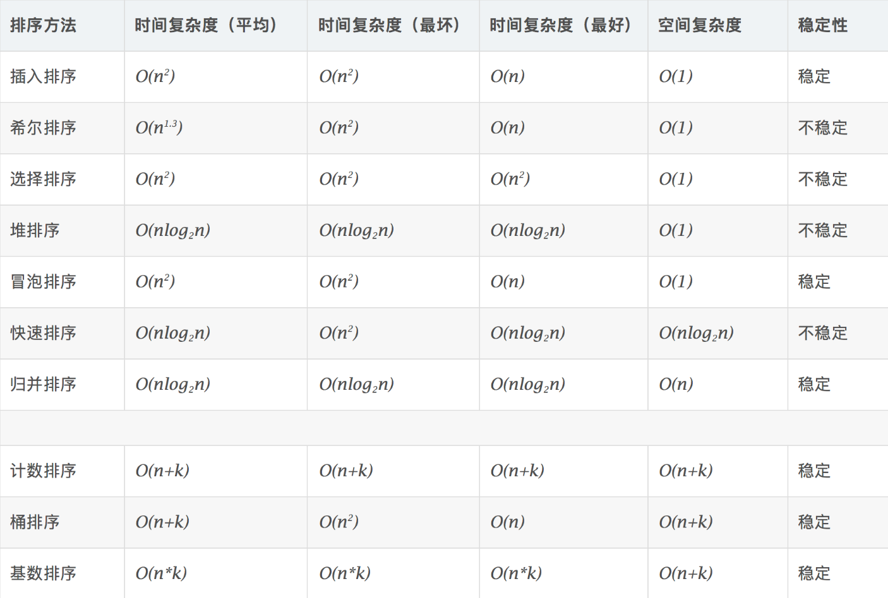

排序
[toc]
概念
排序算法 （英语：Sorting algorithm）是一种将一组特定的数据按某种顺序进行排列的算法。排序算法多种多样，性质也大多不同。
- 稳定性
稳定性是指相等的元素经过排序之后相对顺序是否发生了改变。
基数排序、计数排序、插入排序、冒泡排序、归并排序是稳定排序。
选择排序、堆排序、快速排序不是稳定排序。
- 时间复杂度

选择排序
选择排序（Selection sort）是排序算法的一种，它的工作原理是每次找出第 $i$ 小的元素，然后将这个元素与数组第 $i$ 个位置上的元素交换。
由于 swap（交换两个元素）操作的存在，选择排序是一个不稳定排序。选择排序的时间复杂度为 $O(n^2)$
void selection_sort(int* a, int n) { //选择排序
for (int i=0;i<n;++i) { //逐个进行交换
int ith = i;
for (int j=i+1;j<=n;++j) { //找到未排序的最小元素下标
if (a[j]<a[ith]) {
ith = j;
}
}
int t = a[i]; //交换
a[i] = a[ith];
a[ith] = t;
}
}
冒泡排序
冒泡排序（英语：Bubble Sort）是一种简单的排序算法。由于在算法的执行过程中，较小的元素像是气泡般慢慢「浮」到数列的顶端，故叫做冒泡排序。
它的工作原理是每次检查相邻两个元素，如果前面的元素与后面的元素满足给定的排序条件，就将相邻两个元素交换。当没有相邻的元素需要交换时，排序就完成了。
经过 $i$ 次扫描后，数列的末尾 $i$ 项必然是最大的 $i$ 项，因此冒泡排序最多需要扫描 $n-1$ 遍数组就能完成排序。
冒泡排序是一种稳定的排序方法。时间复杂度为 $O(n^2)$
void bubble_sort(int *a, int n){ //冒泡排序
int flag = 1; //flag等于1表示序列尚未排完
while(flag){ //尚未排完的情况
flag = 0;
for (int i=0;i<n;++i){
if (a[i]>a[i+1]){
flag = 1; //存在前一个数比后一个大的情况
int t = a[i];
a[i] = a[i+1];
a[i+1] = t;
}
}
}
}
插入排序
插入排序（Insertion Sort）是一种简单直观的排序算法。它的工作原理为将待排列元素划分为“已排序”和“未排序”两部分，每次从“未排序的”元素中选择一个插入到“已排序的”元素中的正确位置。
一个与插入排序相同的操作是打扑克牌时，从牌桌上抓一张牌，按牌面大小插到手牌后，再抓下一张牌。
插入排序是一个稳定排序，时间复杂度为 $O(n^2)$，最优时间复杂度为 $O(n)$
void insertion_sort(int* a, int n){ //插入排序
for (int i=1;i<n;++i){
int key = a[i]; //插入元素
int j = i-1;
while(j>=0&&a[j]>key){ //从后往前找到插入的位置
a[j+1] = a[j];
--j;
}
a[j+1] = key;
}
}
快速排序
快速排序（英语：Quicksort），又称分区交换排序（partition-exchange sort），简称快排，是一种被广泛运用的排序算法。
原理
快速排序的工作原理是通过 分治 的方式来将一个数组排序。
快速排序分为三个过程：
- 将数列划分为两部分（要求保证相对大小关系）；
- 递归到两个子序列中分别进行快速排序；
- 不用合并，因为此时数列已经完全有序。
快速排序是一种不稳定的排序方法，快速排序的最佳时间复杂度和平均时间复杂度为 $O(n*logn)$，最坏时间复杂度为 $O(n)$
void quick_sort(int* arr,int left,int right){ //快速排序
if(left>=right) //结束条件
return;
int i=left,j=right,temp=arr[left];
while(i<j){
while(i<j&&arr[j]>temp)
--j;
arr[i] = arr[j];
while(i<j&&arr[i]<temp)
++i;
arr[j] = arr[i];
}
arr[i] = temp;
quick_sort(arr,left,i-1);
quick_sort(arr,i+1,right);
}
归并排序
归并排序是一种采用了 分治 思想的排序算法。
归并排序分为三个过程：
- 将数列划分为两部分（在均匀划分时时间复杂度为 ）；
- 递归地分别对两个子序列进行归并排序；
- 合并两个子序列。